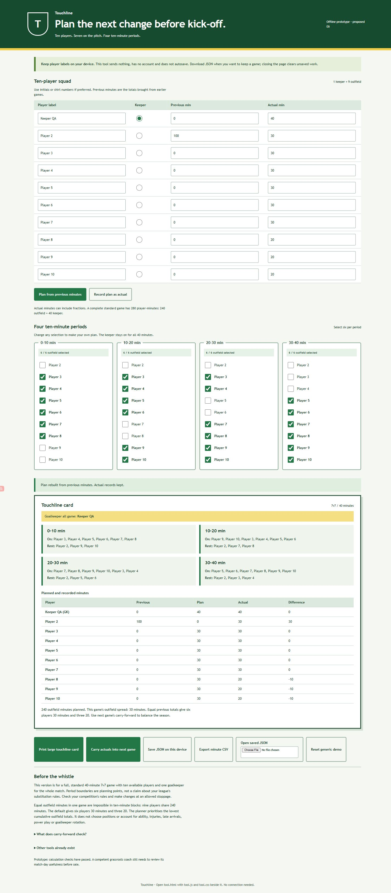

Products people can use locally
Tools, print layouts and printable packs with worked or fictional examples, explicit limits and product-specific verification files.
Full tools, puzzle answers and paid packs stay in the private working preview.
Ten products have working prototypes. Here are the shops, the numbers we can check, and the tests each still needs.
Orders are closed. Proposed prices, competitor listings and local simulations do not establish demand or profit.
Explore the ten offers

Actual preparation ledger. No transaction has been recorded. These zeros do not price the time spent building or establish that a future business costs nothing. Production attribution and tracking are unverified.
Ten distinct storefronts and local products give us something concrete to inspect. None has completed the customer, practitioner or physical checks needed for a paid release.
Change of direction: stop expanding the low-priced digital range. Compare one finished personalised physical gift with one original embroidered garment.
The earlier Market Day-first paid recommendation is withdrawn. The existing stores are preparation we can reuse. No replacement product has yet earned a paid launch. Read the reasoning and the product selection rule.
Arithmetic, puzzle consistency, geometry, imports and exports have narrow test evidence. Actual interface and output captures show the prototypes that were built.
Useful work in real hands, physical print and terrain quality, service labour, willingness to pay and a functioning Shopify purchase-to-delivery path.
The requested sales target of 09:00 BST on 1 October was not achieved. The recorded result is zero paid orders. Archive/package checks do not establish that ten Shopify stores are live.
The Agentic plan supports draft Online Store preparation. Publication and Online Store checkout require a paid plan. Shopify plan rules.
Account, theme and product checks are preparation evidence. Live merchant payment and delivery have not been verified.
No paid plan or payment method was selected. Earlier authenticated editor checks loaded, and the store preview is password protected. Native edits still need fresh persisted readback. Delivery and production checkout need their own checks.
The earlier choice put too much weight on cheap production and easy setup. We need a convincing purchase reason and enough money left from each order to reach the next buyer.
A £6-12 download is inexpensive to deliver. That tells us very little about whether people want it enough to pay.
The current tools have no paid customer evidence, established audience or observed repeat purchases. Some face direct free alternatives. Better storefronts cannot settle those questions.
It gave us concrete products for testing interfaces, exports, checkout preparation and the cost ledger without buying stock. It did not prove that digital delivery works in Shopify: the payment-to-delivery rehearsal is unfinished. Digital products can still make sense when expertise solves an expensive problem or an existing audience buys repeatedly. Those advantages were not established for our current offers.
Investigate a route, customer photograph and milestone details in one framed composition. A buyer-approved proof and careful physical finish would complete a meaningful gift. Existing sellers already offer framed route prints, so the composition and service must earn the difference.
This would be a new specification. It is not the current £24.99 unframed A4 offer. Papello lists a 20 × 40 cm three-aperture frame at £24 excluding VAT, before shipping. The complete delivered quote and sample are missing. Supplier listing.
Investigate a distinctive design for a defined audience on a well-fitting garment. Start with one colour and a design that survives embroidery at its actual size. Sample fit, comfort and wash durability before claiming premium quality.
Inkthreadable advertises Changer 2.0 at £31.53 including VAT. Its pricing guide includes a first decoration; the relevant UK shipping band is £3.78 including VAT. The conditional repeat-order illustration is £35.31. Digitising is £12.60 per design before extras. Exact variant and shipping must be quoted. Garment, pricing inclusions, delivery, embroidery setup.
At an unvalidated £75 selling price and that conditional £35.31 delivered garment cost, £39.69 remains before payment fees, returns, support, advertising and fixed costs. That is room to investigate, not profit. Buyers may not accept the price. A cheap digital item can have a higher percentage margin while leaving much less money to acquire and serve each customer.
Use a chosen screening target of at least £25 per order before acquisition and £15 after measured acquisition, after other variable costs and servicing time. Fixed costs and preparation time still come out afterwards. These are our selection rules, not market averages. Count gifted products, creator fees, commissions and content costs when measuring acquisition.
This is the preparation archive. Its prices and prior quality checks remain visible; they are not the current launch shortlist. Open a concept for its competitors and limitations.
No offer matches those filters. Clear the search or choose all formats.
The ten concepts are independent stores. The conditionally authorised £200 pilot applies once across the portfolio, after its quality gates and funding checks pass.
Tools, print layouts and printable packs with worked or fictional examples, explicit limits and product-specific verification files.
Full tools, puzzle answers and paid packs stay in the private working preview.
Manifest-based offers, proposed prices, visible contents and a local cart and checkout simulation. Public samples show the actual outputs.
The simulation accepts no payment and places no order.
Product imports, Dawn theme packages, pages, menus, draft policies and delivery bindings prepared for installation.
Account, draft-product and theme progress is recorded above. Payment and delivery still need verification.
Competitor dossiers, independent product reviews and an aggregate cash ledger that separates actuals, simulation and assumption models.
No buyer feedback, real order or attribution result is being implied.
Preparation remains at £0 cash spend. One later £200 pilot is conditionally authorised after setup and testing. The cap applies once across the ten-store portfolio. It is not £200 per store. Funding availability and the quality gates still need verification.
If an exact platform quote or required sample costs more than its envelope, pause and revise the pilot. Do not quietly spend the protected £75. That cash exists to cover obligations once funding and the operating workflow are real.
There is no measured unit profit yet. Select a proposed price and enter the costs you have verified or want to test. The result is your scenario, not an actual margin or a sales forecast.
Digital tests are evidence for the cases they cover. A paid pilot requires the other parts of the promise to work too.
Check calculation fixtures, bad-input handling and actual backup recovery. Open the export and print it. Re-run affected paths after a repair.
Stop if a valid backup cannot reopen or an output disagrees with a hand calculation.
Maker, host, coach, grower or crocheter review depends on the product. Museum Key needs unfamiliar players; Fold Street needs assembled paper models.
Stop if the person needs unexplained workarounds or the physical result does not meet the stated scope.
Confirm the product file or service scope, accepted production format, exact costs, payment, refund, policies and customer support. Inspect physical samples.
Stop if the price leaves no room for actual labour and obligations, or the delivery route is untested.
Keep paid orders separate from preview clicks and simulations. Record refunds, fees, supplier costs and owner time against the chosen offer.
Stop at the cash cap. Continue only when the observed result supports the next spend.
The report uses the 1 October competitor research, current product manifests, independent reviews and aggregate measurement exports. Advertised prices may change; variant, currency and delivery caveats stay with each comparison.
A separate offline module can compare selected GBP captured payments, refunds, fees, chargebacks and payout components with bank confirmations. It separates processor activity from confirmed transfers and unsettled amounts. It does not calculate profit, a whole-account bank balance or available pilot funding, and it does not replace the aggregate dashboard.
Actual paid-order spending checks remain blocked until settlement reconciliation is integrated. The aggregate view also blocks a spending indication for actual paid-order datasets. Read the reconciliation scope.
No live order or bank data has been reconciled in the current preparation dataset. Actual paid orders and recorded spending remain zero; production measurement is unverified.
No customer records, raw transaction ledger, credentials or full paid product files are included in this public report. All pictured examples are fictional or original prototype artwork. Interface captures are not physical product photographs.